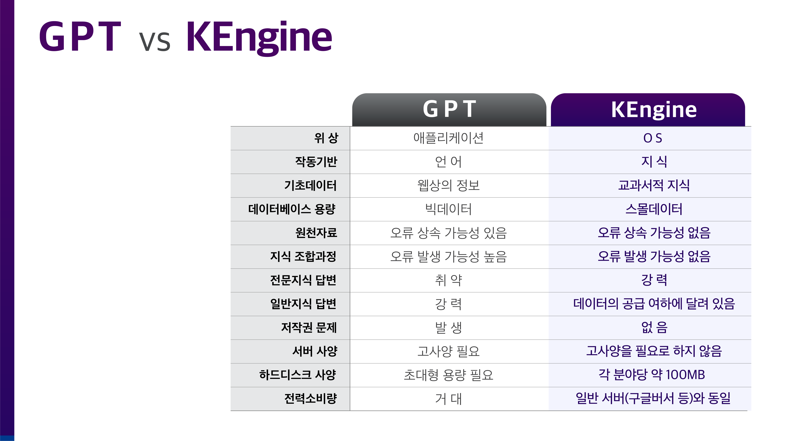

인간의 사유구조와 K엔진
“체계”는 이 세상의 모든 지식을 담을 수 있다. 지금까지는 이것으로서 충분했다. 지금까지는 책이라는 유형물에 모든 지식을 담을 수 밖에 없었고 그리하여 그 지식들을 체계화하는데 까지만 작업이 가능했고 더 이상의 어떤 처치를 할 방법도 없었다. 이것이 지난 수천년 동안 “책”이라는 형태로 지식이 정비되고 전수되고 이해되고 교육되어왔던 방식이다.일반적으로 인간은 어떤 문제되는 상황이 발생하면 일단은 책을 뒤진다. 물론 그 책이 머릿속에 잘 소화되어 정리되어 있는 사람, 즉 변호사와 같은 사람은 책을 뒤질 필요 없이 자신의 머릿속에 구축되어 있는 "두뇌책"을 사용하면 된다. 이 두뇌책의 속도는 엄청 빠르다. 즉 컴퓨터와 마찬가지이다. 질문을 받은 변호사는 즉각 답변한다. 이는 두뇌속에 저장된 정보들이 뇌신경망을 통해 서로 고도의 속도로 통신한 결과이다.
이 장면에서 변호사의 머릿속 어딘가에는 지식들간의 연결정보가 저장되어 있음을 추측할 수 있다. 이 연결정보들이 상호 교통하면서 질서정연한 답변이 입에서 술술 흘러나오는 것이다. 이것을 구현한 것이 K엔진이다. 즉 인간을 구현한 것이다. 즉 K엔진은 이 세상에 등장한 최초의 인조인간이다.
이상에서 알 수 있듯이 지금까지는 오프라인 상에서는 “책”이라는 유형물을 만들어 내는 것에 그치고 그 책 속의 지식들간의 연결관계는 - 엄청난 공부량을 통하여 - 인간의 머릿속 뇌신경세포에 저장했다고 할 수 있다. 즉 그 두가지는 분리되어 저장되었다.
이들 분리된 두가지 요소를 통합한 것이 바로 K엔진이다. 컴퓨터는 이 두가지 요소를 하나의 하드디스크에 저장한다. 즉 이제 책만 만들면 더 이상 각고의 노력을 들여 공부를 할 필요가 없어졌다. 책만 만들어지면 이제는 공부를 하지 않고도 누구나 변호사가 되는 것이다. 의사도 그렇고 약사도 마찬가지이다. 이 세상의 모든 전문지식이 “공부”할 필요 없이 나의 것이 되는 것이다.
이는 단지 전문지식 분야에만 한하는 것이 아니다. 우리가 평소 구글링을 통해 얻는 모든 일반정보 역시 체계화가 된다. 그리하여 일상적인 지식을 다루는 영역 역시 K엔진의 시장점유 속으로 들어오게 된다. 결국 GPT 가 존립할 기반은 완전히 사라지게 된다. GPT는 늦어도 5년 이내에 IT 시장에서 완전히 사라지게 된다. 구글은 어느 정도 남아서 K엔진을 보조하게 된다.
일단 인간의 성의있는 수작업에 의해 지식 데이터와 그 연결정보가 입력되기만 하면 그 다음에는 교과서의 체계적 특성에 바탕하여 모든 질문에 완전한 답변을 할 수 있다. 이 때 그 수작업은 내가 하는 것이 아니라 남이 해 준다. 앞으로 수천, 수만개의 기업들이 나서서 그러한 데이터 작업을 해 주게 된다. 이제 나는 아무것도 할 것이 없다. 공부 안해도 언제나 100점이다. 학교 갈 이유가 없어진다.
눈치 빠른 사람은 이 장면에서 인공지능의 OS가 등장했다는 사실을 깨달았을 것이다.
K엔진의 구체적 작동방식 K엔진백서
